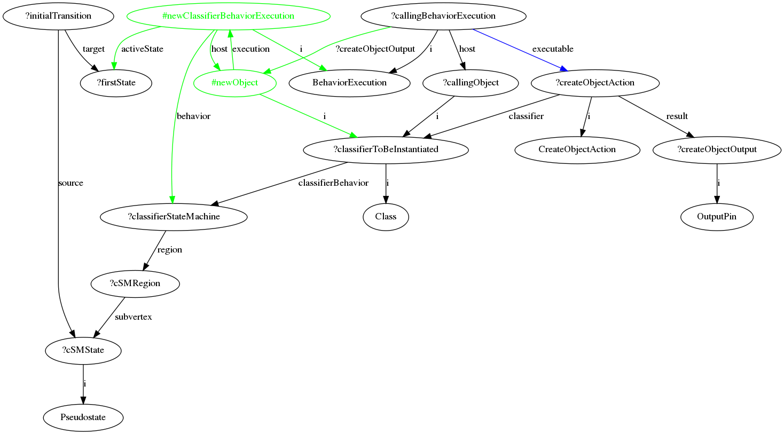

US Section 11.3.16 CreateObjectAction
To go to the page containing the rule description in the US pdf document, click here .
{kind=link}
Context
Below is the xml file which defines the order in which the rules are executed.
Rationale and Comments
'CreateObjectAction is an action that creates an object that conforms to a statically specified classifier and puts it on an output pin at runtime.' It has a classifier indicating the class of object to be created, and an output pin on which the created object is to be placed. The action stands alone, in that 'no behaviors are executed, no initial expressions are evaluated, and no state machine transitions are triggered. The new object has no structural feature values and participates in no links.'
This implementation applies where the calling instance and the created instance are of the same type - that is, the calling instance is making a new instance of itself. The rule creates a new instance of the desired type. It does not directly link the output pin and the new instance, but links the calling behavior node and the new instance with an arc that has the same name as the output pin.
The new object is linked up with the state machine of the desired class. It is placed in the first state of the sate machine. This state is identified by following the 'target' arc of the transition out of the initial pseudostate.